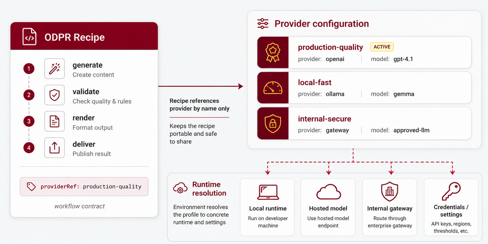

OPEN DATA PRODUCT RECIPE SPECIFICATION - The Linux Foundation
Version DRAFT
The key words "MUST", "MUST NOT", "REQUIRED", "SHALL", "SHALL NOT", "SHOULD", "SHOULD NOT", "RECOMMENDED", "NOT RECOMMENDED", "MAY", and "OPTIONAL" in this document are to be interpreted as described in BCP 14 (RFC 2119 and RFC 8174) when, and only when, they appear in all capitals, as shown here.
The specification is shared under Apache 2.0 license. Development of the specification is under the umbrella of the Linux Foundation.
| Topic | Link | Description |
|---|---|---|
| Version source | Data Product Recipe Specification on GitHub | Official source repository for the ODPR specification |
| Knowledge Base | Open Data Product Spec Family Knowledge Base | Practical examples, FAQs, and implementation guidance |
| Contribute | Raise an issue in GitHub | Submit issues or suggestions to the specification maintainers |
Introduction
The Data Product Recipe Specification, ODPR, is a lightweight, vendor-neutral, machine-readable recipe model for repeatable data product delivery workflows.
ODPR is part of the OpenDataProducts.org standards family. It complements the Open Data Product Specification, ODPS, Open Data Product Catalogs, ODPC, Open Data Product Graphs, ODPG, and Open Data Product Vocabulary, ODPV, by defining how workflows around those artifacts can be declared and automated.
ODPR standardizes how data product work gets done, not only what the final artifact looks like.
Why ODPR is needed
Data product work often depends on manual command sequences, scripts, notebooks, prompts, and local habits. That creates delivery variation, makes validation and review steps easy to skip, hides model-provider choices, and forces CI/CD automation and AI agents to guess the intended workflow.
ODPR solves this by turning repeatable data product work into declared recipes. A recipe describes:
- what workflow runs
- which inputs it uses
- which outputs it creates
- which steps run
- which checks or gates apply
- which context format is preferred
- which execution mode is expected
- which execution mode and provider reference are expected
- whether human review is required
Core design principle
A recipe is not a script.
A recipe is a portable, declarative workflow contract. Scripts tell one tool what to do. Recipes tell teams, tools, agents, and automation systems how a data product workflow should run.
Recipe, provider, and catalog configuration
ODPR standardizes three clear root objects: Recipe, Provider, and
RecipeCatalog.
A Recipe declares workflow intent: which steps run, which inputs and outputs
matter, which gates apply, and which provider profile should be used.
A Provider declares a named runtime profile: provider family, model,
provider class, endpoint reference, credentials reference, and safe default
settings such as temperature. This prevents each SDK, CI system, MCP server, or
agent runtime from inventing a different provider shape.
A RecipeCatalog is a metadata-only discovery document. It lists available
recipes and points to their full Recipe files. It does not embed full steps,
credentials, runtime status, planned writes, run ids, logs, or provider
readiness results.
In an ODPR recipe, a provider is referenced by name:
execution:
mode: hosted
providerRef: production-quality
The provider profile itself is configured outside the recipe, as a separate
ODPR Provider object:

schema: https://opendataproducts.org/odpr-v1.0/schema/odpr.yaml
version: "1.0"
kind: Provider
provider:
id: production-quality
provider: openai
model: gpt-4.1
providerClass: hosted
temperature: 0.2
This two-part model keeps recipes portable and safe to share. The same recipe
can use providerRef: production-quality in development, CI, staging, or
production while each environment resolves that reference to the right local
model, hosted model, internal gateway, credentials, and operational settings.
ODPR standardizes the workflow contract, provider profile shape, and recipe
discovery metadata; the executing implementation owns runtime resolution,
credentials, provider connectivity, invocation mode, readiness checks, write
scope checks, run manifests, and logs.
Relationship to the standards family
The OpenDataProducts.org standards family follows a separation of concerns:
- ODPS defines the product.
- ODPC defines catalogs and reusable portfolio objects.
- ODPG defines relationships and graphs.
- ODPV defines shared vocabulary and terms.
- ODPR defines repeatable workflows for data product delivery.
ODPR does not define the product, catalog, graph, or vocabulary model. It defines the workflow contract around those artifacts.
Example recipe
schema: https://opendataproducts.org/odpr-v1.0/schema/odpr.yaml
version: "1.0"
kind: Recipe
recipe:
metadata:
id: RCP-CI-001
name:
en: CI Validate Generated Fragments
description:
en: Generate and validate draft fragments during CI.
version: "1.0.0"
type: ci
environment: ci
execution:
mode: local
providerRef: local-fast
context:
format: gcf
fallback:
- toon
- yaml
steps:
- id: generate-signals
command: generate
with:
kind: signal
input: source_docs/signals/
output: generated/fragments/
- id: validate-fragments
command: validate
with:
document: generated/fragments/signal.yaml
outputs:
- id: generated-fragments
path: generated/fragments/
gates:
- id: fragments-valid
type: validation
required: true
review:
required: false
This recipe declares what a CI runner or SDK executor should do when source documents for signals change. The expected run is:
- The executor loads the recipe and validates it against
https://opendataproducts.org/odpr-v1.0/schema/odpr.yaml. - It reads
recipe.version: "1.0.0"as the version of this workflow contract. - It sees
type: ciand treats the recipe as an automated CI workflow, not as an interactive authoring or release-review workflow. - It reads
environment: ciand labels the run as a CI workflow context. - It prepares a local execution run using the configured provider named
local-fast. ODPR only stores theproviderRef; credentials, model settings, command bindings, and runtime configuration stay in the executing SDK, CI system, MCP server, or platform. - It prepares recipe context in GCF format. If GCF is not available, the executor can fall back first to TOON and then to YAML.
- It runs the
generate-signalsstep by invoking the executor'sgenerateoperation withkind: signal, reading inputs fromsource_docs/signals/, and writing generated fragments togenerated/fragments/. - It runs the
validate-fragmentsstep by invoking the executor'svalidateoperation againstgenerated/fragments/signal.yaml. - It exposes
generated-fragmentsas the durable output path that CI jobs or agents can inspect after the run. - It evaluates the
fragments-validvalidation gate. Because the gate is required, failed validation means the CI workflow fails. - It does not pause for manual review after the gate passes, because
review.requiredisfalse.
Specification aims
ODPR aims to:
- make data product workflows portable, repeatable, inspectable, and automation-ready
- support standard development, CI, release, localization, hybrid, and agent-safe workflows
- let teams switch between local, hosted, and hybrid model execution
- standardize provider profile shape without storing raw secrets or defining provider-specific APIs
- support compact context policy such as YAML, TOON, GCF, or automatic fallback
- expose safe workflows to AI agents before they run tools
Note! In "Open Data Product" the focus is on the latter words and the prefix "open" refers to the openness of the standard. Any connotations to open data are not intentional, intended, or desirable.
Recipe Toolkit
Snippet of YAML version:
schema: https://opendataproducts.org/odpr-v1.0/schema/odpr.yaml
version: "1.0"
kind: Recipe
recipe:
metadata:
id: RCP-DEV-001
name:
en: Local Fragment Draft
description:
en: Generate draft ODPC fragments locally for fast iteration.
type: dev
execution:
mode: local
providerRef: local-fast
steps:
- id: generate-signals
command: generate
with:
kind: signal
input: source_docs/signals/
output: generated/fragments/
ODPR is published in several forms for different users and tools. This specification provides the human-readable documentation, while the schema, recipe records, provider records, and example files provide machine-readable resources for validation, workflow automation, AI retrieval, and agent use.
Use odpr.yaml or odpr.json to validate Recipe, Provider, and RecipeCatalog files,
recipes.jsonl for lightweight object selection and retrieval, and the
examples when generating or repairing ODPR YAML.
The ODP Agent SDK supports ODPR and is the first reference implementation for validating and executing ODPR recipes. Use it when building agents or automation across ODPS, ODPC, ODPG, and ODPV workflows. ODPR recipes remain portable workflow contracts and can also be used with other conforming SDKs, CI/CD systems, MCP servers, or platform implementations.
| Resource | Format | Purpose |
|---|---|---|
| ODP Agent SDK | SDK | First reference implementation for validating and executing ODPR recipes; ODPR can also be used with other conforming implementations |
llms.txt |
Text | AI agent guidance for discovering and using ODPR resources |
odpr.yaml |
YAML Schema | YAML representation of the ODPR validation schema |
odpr.json |
JSON Schema | JSON representation of the ODPR validation schema |
recipes.jsonl |
JSONL | Agent-friendly one-recipe-per-line file for retrieval and lightweight tools |
catalog.yaml |
YAML | Metadata-only RecipeCatalog that points to canonical recipe examples |
minimal.yaml |
YAML | Minimal valid ODPR recipe example |
ci-validate-generated-fragments.yaml |
YAML | CI recipe that generates and validates fragments |
release-portfolio-review.yaml |
YAML | Release recipe for portfolio refresh, localization, and explanation |
portfolio-localization.yaml |
YAML | Localization recipe with YAML list language targets |
hybrid-graph-review.yaml |
YAML | Hybrid recipe that mixes local and hosted execution |
production-quality.yaml |
YAML | Hosted Provider profile for production-quality generation |
local-fast.yaml |
YAML | Local Provider profile for fast development runs |
local-graph.yaml |
YAML | Local Provider profile for graph-building workflows |
internal-secure.yaml |
YAML | Internal gateway Provider profile for controlled production use |
Agent-oriented helper scripts are available in the source repository for maintaining and using recipe artifacts.
| Script | Purpose |
|---|---|
build_recipe_catalog.py |
Regenerates the metadata-only source/recipes/catalog.yaml from canonical recipe examples; use --check to detect catalog drift |
check_agent_artifacts.py |
Checks schema alignment, example files, recipe JSONL records, and llms.txt references |
generate_recipe_artifacts.py |
Regenerates derived recipe artifacts such as source/schema/odpr.json from canonical source files; use --check to detect drift |
search_recipes.py |
Searches ODPR recipe records by keyword or exact recipe id; use --json for machine-readable results |
validate_recipe.py |
Validates ODPR YAML or JSON Recipe, Provider, or RecipeCatalog files against the ODPR schema and rejects embedded secrets or API keys |
The Markdown tables in this specification are intended for human readers. The schema, JSONL, and YAML example files are intended for programmable use, automation, validation, AI retrieval, and recipe tooling.
AI Agent Usage Patterns
ODPR is designed to be usable by AI agents, SDKs, CI/CD systems, and automation tools. From an agent perspective, ODPR provides an inspectable workflow contract before an action is run: it names the workflow, lists the steps, declares the execution mode, points to context policy, and describes gates or review expectations.
ODPS defines one data product. ODPC defines catalogs and reusable portfolio objects. ODPG defines relationships between data product artifacts. ODPV provides shared vocabulary terms. ODPR defines repeatable workflows around those artifacts.
Agent capabilities enabled by ODPR
Agents can use ODPR to:
- discover safe workflow recipes before running SDK tools
- use a
RecipeCatalogto find complete recipe files - explain what a recipe will do before execution
- validate recipe files against
odpr.yamlorodpr.json - select a development, CI, release, localization, hybrid, or agent recipe
- inspect whether a workflow expects local, hosted, hybrid, or no model execution
- follow declared gates and review requirements
- reuse a recipe in CI/CD or production automation
- preserve stable workflow intent while model providers vary by environment
Common agent workflows
| Workflow | Agent behavior |
|---|---|
| Recipe validation | Validate ODPR recipe files and report schema-compliant repairs. |
| Recipe selection | Choose a recipe based on task type, execution mode, context format, or required review. |
| CI/CD preparation | Convert a repeatable SDK command sequence into a declared recipe. |
| Local development | Run draft recipes that use local providers for fast iteration. |
| Production review | Run release recipes that use hosted providers, validation gates, and review expectations. |
| Hybrid execution | Combine local generation or graph inference with hosted review or localization. |
| Agent handoff | Inspect recipe steps and gates before invoking SDK tools. |
Agent behavior constraints
Agents using ODPR should keep boundaries clear:
- Do not treat ODPR as a data product definition; use ODPS for product metadata.
- Do not treat ODPR as a catalog object model; use ODPC for catalogs and portfolio objects.
- Do not treat ODPR as a graph model; use ODPG for nodes, edges, and relationships.
- Do not embed secrets or API keys in recipes.
- Do not put dry-run responses, run manifests, provider readiness results, planned writes, write-scope checks, run ids, or logs in ODPR documents.
- Do not assume
providerRefis globally meaningful; it must be resolved by the executing SDK, CI system, or platform. - Do not silently skip required gates or human review requirements.
Example prompts ODPR enables
- "Validate this ODPR recipe and suggest schema-compliant repairs."
- "Create a CI recipe that generates signal fragments and validates them."
- "Create a release recipe that refreshes, localizes, and explains a portfolio."
- "Explain which steps this recipe will run and whether human review is required."
- "Convert this local development workflow into a hosted production recipe."
Recipe Library
ODPR publishes a small library of canonical recipes under
/recipes/examples/. These examples are not decorative snippets. They are
complete recipe files that can be copied, validated, adapted, and used by SDKs,
CI/CD systems, MCP servers, or other ODPR-aware platforms.
Agents and tools can also use /recipes/recipes.jsonl as a lightweight lookup
file for selecting the right recipe pattern before loading the full YAML
example.
Use /recipes/catalog.yaml when a tool needs metadata-only discovery of
available recipe files. Catalog entries point to complete recipes; they do not
embed step bodies or runtime output.
| Recipe | Use when | What happens |
|---|---|---|
minimal.yaml |
A developer wants the smallest valid local recipe for fast iteration. | The executor labels the run as development, prepares the local provider local-fast, runs one generate step for signal fragments, reads source_docs/signals/, writes draft fragments to generated/fragments/, and exposes that folder as draft-fragments. |
ci-validate-generated-fragments.yaml |
CI must generate draft fragments and fail if the generated output is invalid. | The executor labels the run as ci, generates signal fragments, exposes generated/fragments/ as generated-fragments, validates generated/fragments/signal.yaml, and enforces the required fragments-valid validation gate before the CI job can pass. |
release-portfolio-review.yaml |
A release process must refresh, localize, explain, and review a portfolio before publication. | The executor labels the run as production, uses a hosted production-quality provider, refreshes portfolio/, localizes it to Finnish and Swedish, generates an explanation, exposes localized pages and explanation output paths, applies a release timeout, and requires human review before publishing. |
portfolio-localization.yaml |
A portfolio workspace must be localized into configured target languages. | The executor uses the hosted production-quality provider, localizes portfolio/ to Finnish and Swedish using a YAML language list, exposes the localized HTML paths, and requires release-owner review. |
hybrid-graph-review.yaml |
A workflow should combine local graph work with hosted review or explanation. | The executor labels the run as staging, builds graph context locally from generated/fragments/, exposes generated/graph.yaml as graph-context, then uses a hosted production-quality provider to explain the portfolio, with both automated and human review expected. |
The library is intentionally small. Each example should demonstrate a distinct
workflow pattern rather than every possible command option. Local organizations
can extend these recipes with x- fields or implementation-specific command
bindings without changing ODPR semantics.
ODPR also publishes Provider examples under /providers/examples/. Use these
when a recipe references a provider profile such as local-fast,
local-graph, production-quality, or internal-secure.
| Provider | Use when | What it standardizes |
|---|---|---|
local-fast.yaml |
Local development should use a fast local model profile. | providerRef: local-fast resolves to an Ollama-backed local provider profile with a development environment label and low temperature. |
local-graph.yaml |
Graph-building steps should run locally without hosted model routing. | providerRef: local-graph resolves to a local graph-building provider profile with a deterministic temperature. |
production-quality.yaml |
Release, CI, or agent workflows need a hosted production-grade model profile. | providerRef: production-quality resolves to an OpenAI hosted provider profile with gpt-4.1, hosted provider class, production label, credentials reference, and temperature: 0.2. |
internal-secure.yaml |
Enterprise workflows must route model calls through an approved internal gateway. | providerRef: internal-secure resolves to a gateway provider profile with endpoint and credentials references instead of raw secrets. |
ODPR RecipeCatalog
The RecipeCatalog object is the ODPR root object for recipe discovery. It
lists available recipes and points to their complete Recipe files.
A catalog is metadata-only. It MUST NOT contain full recipe step bodies, credentials, provider readiness results, runtime status, planned writes, run ids, or logs. Catalog entries should be treated as stale until the referenced recipe file is loaded and validated.
Root structure
schema: https://opendataproducts.org/odpr-v1.0/schema/odpr.yaml
version: "1.0"
kind: RecipeCatalog
recipeCatalog:
metadata:
id: RCP-CATALOG-001
name:
en: ODPR Example Recipe Catalog
recipes:
- path: recipes/examples/release-portfolio-review.yaml
id: RCP-RELEASE-001
version: "1.0.0"
type: release
name:
en: Release Portfolio Review
description:
en: Refresh, localize, explain, and review a portfolio before release.
tags:
- portfolio
- release
environment: production
executionMode: hosted
providerRef: production-quality
contextFormat: gcf
requiresReview: true
commands:
- portfolio.refresh
- portfolio.localize
- portfolio.explain
| Element | Type | Required | Description |
|---|---|---|---|
schema |
string | required | URI of the ODPR schema used to validate the catalog file. |
version |
string | required | Version of the ODPR specification used by the catalog file. |
kind |
string | required | ODPR root object type. Catalog files MUST use RecipeCatalog. |
recipeCatalog |
object | required | Top-level object that defines recipe discovery metadata. |
RecipeCatalog fields
| Element | Type | Required | Description |
|---|---|---|---|
metadata.id |
string | required | Stable catalog id. |
metadata.name |
language map | required | Human-readable catalog name. |
recipes |
array | required | Metadata entries pointing to complete recipe files. |
Catalog entry fields
| Element | Type | Required | Description |
|---|---|---|---|
path |
string | required | Project-relative path to the complete Recipe file. |
id |
string | required | Recipe id copied from the referenced recipe metadata. |
version |
string | required | Recipe version copied from the referenced recipe. |
type |
string | required | Recipe type such as dev, ci, release, localization, hybrid, or agent. |
name |
language map | required | Human-readable recipe name. |
description |
language map | optional | Short recipe description. |
tags |
array | optional | Discovery tags. |
environment |
string | optional | Intended environment label. |
executionMode |
string | optional | Expected runtime/provider class: local, hosted, hybrid, or none. |
providerRef |
string | optional | Default provider profile reference for LLM-backed steps. |
contextFormat |
string | optional | Preferred context format: yaml, toon, gcf, or auto. |
requiresReview |
boolean | optional | Whether the referenced recipe declares required review. |
commands |
array | optional | Command names used by the referenced recipe. |
ODPR Recipe
The Recipe object is the root ODPR object. It declares one repeatable workflow
for data product delivery, validation, review, localization, publishing, or
automation.
Recipes are intended to be readable by humans and executable by tools. A recipe should be specific enough for an SDK, CI/CD system, MCP server, or agent to understand the workflow before it runs, while staying portable enough to avoid binding the standard to one implementation.
Root structure
schema: https://opendataproducts.org/odpr-v1.0/schema/odpr.yaml
version: "1.0"
kind: Recipe
recipe:
metadata:
id: RCP-DEV-001
name:
en: Local Fragment Draft
description:
en: Generate draft fragments locally.
version: "1.0.0"
type: dev
steps:
- id: generate-signals
command: generate
with:
kind: signal
input: source_docs/signals/
output: generated/fragments/
| Element | Type | Required | Description |
|---|---|---|---|
schema |
string | required | URI of the ODPR schema used to validate the recipe file. |
version |
string | required | Version of the ODPR specification used by the recipe file. |
kind |
string | required | ODPR root object type. Recipe files MUST use Recipe. |
recipe |
object | required | Top-level object that defines the workflow recipe. |
Recipe fields
recipe:
metadata:
id: RCP-CI-001
name:
en: CI Validate Generated Fragments
description:
en: Generate and validate fragments.
version: "1.0.0"
type: ci
environment: ci
execution:
mode: local
providerRef: local-fast
context:
format: gcf
fallback:
- toon
- yaml
steps:
- id: validate-fragments
command: validate
with:
document: generated/fragments/signal.yaml
outputs:
- id: generated-fragments
path: generated/fragments/
gates:
- id: fragments-valid
type: validation
required: true
review:
required: false
runPolicy:
timeoutSeconds: 300
| Element | Type | Required | Description |
|---|---|---|---|
metadata |
object | required | Stable recipe identity, name, optional description, owner, and tags. |
version |
string | required | Version of this recipe workflow. This is separate from the top-level ODPR specification version. |
type |
string | required | Recipe type such as dev, ci, release, localization, hybrid, or agent. |
steps |
array | required | Ordered workflow operations. |
inputs |
array | optional | Named workflow inputs. |
outputs |
array | optional | Named workflow outputs. |
context |
object | optional | Context format policy such as YAML, TOON, GCF, or automatic fallback. |
execution |
object | optional | Workflow intent such as local, hosted, hybrid, or model-free runtime/provider class. |
gates |
array | optional | Validation, quality, or review gates. |
review |
object | optional | Human or agent review expectations. |
environment |
string | optional | Environment label such as development, CI, staging, or production. |
runPolicy |
object | optional | Runtime limits such as timeout or retry guidance. |
Recipe types
| Type | Purpose |
|---|---|
dev |
Local development, drafting, and fast iteration. |
ci |
Automated validation and build checks. |
release |
Production-grade review, refresh, localization, rendering, and publishing. |
localization |
Translation and multilingual portfolio or product work. |
hybrid |
Workflows that mix local and hosted execution. |
agent |
Agent-safe workflows that AI agents can inspect and run. |
Execution modes
A Recipe is the portable workflow contract. The same recipe document can be
validated, dry-run, executed, or resumed by an SDK or platform. ODPR does not
store invocation mode in the recipe body. Invocation mode belongs to the
executing tool, for example an SDK command using --dry-run or --execute.
recipe.execution.mode describes runtime/provider class such as local, hosted,
hybrid, or none.
| Mode | Meaning |
|---|---|
local |
Runs with local model or local tooling. |
hosted |
Runs with hosted model or hosted service. |
hybrid |
Uses local and hosted execution in the same recipe. |
none |
Does not require model execution. |
Context formats
| Format | Meaning |
|---|---|
yaml |
Use canonical YAML context. |
toon |
Use TOON compact context when available. |
gcf |
Use GCF compact graph/catalog context when available. |
auto |
Let the executing tool choose the preferred available context. |
Provider references
providerRef identifies a standardized ODPR Provider profile by
provider.id. The recipe does not embed provider internals; it only names the
profile that should be used.
A recipe can declare a default provider in execution.providerRef. Individual
steps can override it with step.providerRef when one workflow mixes local and
hosted execution.
The referenced Provider object defines the provider family, model, provider
class, endpoint reference, credentials reference, and safe runtime defaults.
Raw secrets MUST NOT be stored in recipes or provider documents.
execution.providerRef is the default provider profile for LLM-backed steps.
Step-level providerRef overrides execution.providerRef. Step-level model
overrides the provider model for that step. Deterministic and report commands
MUST NOT use providerRef or model.
ODPR validation tools SHOULD reject embedded secrets or API keys in recipes.
Use providerRef in recipes and credentialsRef in Provider documents instead
of fields such as apiKey, token, password, or inline secret values.
Recommended commands
ODPR keeps commands lightweight so recipes stay portable across implementations. Implementations SHOULD support the recommended command names where the underlying capability exists. Implementations MAY support additional commands.
| Command | Classification | Required with |
Optional with |
|---|---|---|---|
generate |
llm-backed |
input, kind, output |
config, prompts, profile, includeComponents, maxSourceChars, ollamaUrl |
odpc.build |
deterministic |
input, output |
html, toon, gcf, id, name, description, recursive, validate |
odpg.build |
llm-backed |
input, output |
toon, gcf, contextGraph, id, name, description, recursive, validate, config, prompts, ollamaUrl |
odpg.render |
deterministic |
graph, output |
none |
portfolio.build |
llm-backed |
at least one of objectives, useCases, signals, or products; and output, workspace, or both |
title, config, prompts, ollamaUrl, strictValidation |
portfolio.refresh |
llm-backed |
workspace |
objectives, useCases, signals, products, title, config, allSources, prompts, ollamaUrl, strictValidation |
portfolio.sync |
deterministic |
workspace |
strictValidation |
portfolio.localize |
llm-backed |
workspace, languages |
defaultLanguage, config, prompts, ollamaUrl, strictValidation |
portfolio.render |
deterministic |
workspace |
output, strictValidation |
portfolio.explain |
report |
workspace |
none |
validate |
deterministic |
document |
none |
explain |
report |
document |
none |
with is the argument object for the selected command. providerRef and
model stay beside command; they do not belong inside with.
portfolio.localize.with.languages SHOULD be written as a YAML list of BCP 47
language tags.
| Classification | Meaning |
|---|---|
deterministic |
No provider needed; repeatable from files and options. |
llm-backed |
Calls a configured provider and model. |
review |
Requires human or external approval. |
report |
Reads artifacts and produces summaries, diagnostics, or review material. |
Outputs
Use inputs and outputs when a workflow uses or creates durable artifacts
that later steps, CI
jobs, reviewers, or agents should inspect. Outputs are named paths. They do not
replace the command-specific with.output argument; they make expected durable
results visible at the recipe level.
Recipe-level paths should be project-relative. Recipes should not use absolute
paths or .. traversal. ODPR states this safety expectation; SDKs and
platforms enforce write-scope policy.
Gates, review, and runtime policy
Required gates SHOULD be evaluated or reported by the executing tool. Tools SHOULD NOT silently skip required gates.
review.required declares whether a recipe expects review after automated
steps complete. review.mode can be human, agent, both, or none.
runPolicy gives lightweight runtime guidance such as timeout, stop-on-failure
behavior, and retry expectations. It is useful for CI jobs, local model calls,
portfolio localization, and hosted provider calls. ODPR v1 does not define
approval records, workflow pauses, run manifests, or gate status storage.
Environment labels
Use environment to label the intended operating context, such as
development, ci, staging, or production. The value is a string so teams
can use local naming conventions while keeping common labels readable.
Example
schema: https://opendataproducts.org/odpr-v1.0/schema/odpr.yaml
version: "1.0"
kind: Recipe
recipe:
metadata:
id: RCP-RELEASE-001
name:
en: Release Portfolio Review
description:
en: Refresh, localize, and explain a portfolio for release review.
version: "1.0.0"
type: release
execution:
mode: hosted
providerRef: production-quality
environment: production
context:
format: gcf
fallback:
- toon
- yaml
runPolicy:
timeoutSeconds: 900
steps:
- id: refresh-portfolio
command: portfolio.refresh
with:
workspace: portfolio/
- id: localize-portfolio
command: portfolio.localize
with:
workspace: portfolio/
languages:
- fi
- sv
- id: explain-portfolio
command: portfolio.explain
with:
workspace: portfolio/
outputs:
- id: localized-portfolio-fi
path: portfolio/index.fi.html
- id: localized-portfolio-sv
path: portfolio/index.sv.html
- id: release-explanation
path: portfolio/explanation.md
gates:
- id: human-review
type: review
required: true
review:
required: true
mode: human
instructions: Review localized pages and generated reports before publishing.
This release recipe describes a portfolio review workflow. When an executor runs it, the expected flow is:
- Validate the recipe against the ODPR schema and confirm it is a
Recipe. - Treat the workflow as a
releaserecipe, which means it is intended for a publication or release-review process rather than local drafting. - Use hosted execution through the configured provider reference
production-quality. The matching ODPRProviderobject describes the runtime profile, while raw credentials and live endpoint resolution stay in the executing SDK or platform. - Prepare compact context in GCF format, with TOON and YAML as fallback formats.
- Run
portfolio.refreshfor theportfolio/workspace. - Run
portfolio.localizefor the same workspace and produce Finnish and Swedish localized outputs. - Run
portfolio.explainso reviewers get generated explanation material for the refreshed portfolio. - Require human review before the release workflow is considered complete.
ODPR Provider
The Provider object is the second ODPR root object. It defines a named
runtime provider profile that recipes can reference with providerRef.
Providers standardize the shape of LLM and execution-provider configuration without putting provider details inside workflow recipes. A recipe stays focused on what should happen. A provider profile declares how a named runtime profile resolves to a provider family, model, endpoint reference, credentials reference, and model settings.
Provider profiles MUST NOT contain raw secrets. Use credentialsRef or
implementation-specific secret references instead.
ODPR validation tools SHOULD reject embedded secrets or API keys, including
fields such as apiKey, token, password, or raw secret-looking values.
Root structure
schema: https://opendataproducts.org/odpr-v1.0/schema/odpr.yaml
version: "1.0"
kind: Provider
provider:
id: production-quality
provider: openai
model: gpt-4.1
providerClass: hosted
temperature: 0.2
| Element | Type | Required | Description |
|---|---|---|---|
schema |
string | required | URI of the ODPR schema used to validate the provider file. |
version |
string | required | Version of the ODPR specification used by the provider file. |
kind |
string | required | ODPR root object type. Provider files MUST use Provider. |
provider |
object | required | Top-level object that defines one named provider profile. |
Provider fields
provider:
id: production-quality
provider: openai
model: gpt-4.1
providerClass: hosted
endpointRef: platform:openai
credentialsRef: env:OPENAI_API_KEY
temperature: 0.2
settings:
maxOutputTokens: 4000
| Element | Type | Required | Description |
|---|---|---|---|
id |
string | required | Stable profile name referenced by execution.providerRef or step.providerRef. |
provider |
string | required | Provider family or runtime adapter, such as openai, ollama, lmstudio, openrouter, or gateway. |
model |
string | optional | Model name or runtime model identifier. |
providerClass |
string | optional | Provider class such as local, hosted, hybrid, or none. |
endpointRef |
string | optional | Reference to a platform, gateway, or runtime endpoint. |
credentialsRef |
string | optional | Reference to credentials managed outside the provider document. |
temperature |
number | optional | Default generation temperature for this provider profile. |
settings |
object | optional | Additional provider settings that are safe to share and do not contain secrets. |
description |
string | optional | Human-readable purpose of the provider profile. |
environment |
string | optional | Environment label such as development, CI, staging, or production. |
Provider references
A recipe uses providerRef to select a Provider profile by provider.id:
execution:
mode: hosted
providerRef: production-quality
The Provider object with id: production-quality defines the runtime profile:
schema: https://opendataproducts.org/odpr-v1.0/schema/odpr.yaml
version: "1.0"
kind: Provider
provider:
id: production-quality
provider: openai
model: gpt-4.1
providerClass: hosted
temperature: 0.2
credentialsRef: env:OPENAI_API_KEY
This keeps the recipe portable while avoiding a provider wild west. Recipes
standardize workflow intent. Providers standardize named runtime profiles.
Executing SDKs, CI/CD systems, MCP servers, agent runtimes, and platforms then
resolve endpointRef, credentialsRef, and any implementation-specific
settings during execution.
Example profiles
schema: https://opendataproducts.org/odpr-v1.0/schema/odpr.yaml
version: "1.0"
kind: Provider
provider:
id: local-fast
provider: ollama
model: gemma
providerClass: local
temperature: 0.1
environment: development
These examples show how Provider profiles turn recipe-level providerRef
names into standardized runtime profiles.
local-fast is intended for development and fast CI-style checks. A recipe
that uses providerRef: local-fast asks the executor to use a local provider
profile backed by Ollama and the gemma model. The low temperature keeps local
drafting runs predictable while avoiding any hosted model dependency.
schema: https://opendataproducts.org/odpr-v1.0/schema/odpr.yaml
version: "1.0"
kind: Provider
provider:
id: internal-secure
provider: gateway
model: approved-llm
providerClass: hosted
endpointRef: platform:internal-gateway
credentialsRef: vault:odp-agent-runtime
temperature: 0.0
environment: production
internal-secure is intended for controlled production or enterprise
environments. A recipe that uses providerRef: internal-secure asks the
executor to route model calls through an approved internal gateway. The profile
names the gateway endpoint and credential reference, but it does not embed the
actual credential or API key.
Specification extensions
While ODPR defines the core recipe object and attributes, organizations may need to add implementation-specific metadata for local tools, CI/CD systems, governance workflows, or platform-specific requirements.
Extension properties are patterned fields prefixed with x-. These fields may
appear inside recipe objects where the schema allows extension properties.
Extensions are not part of the official ODPR object model unless they are later adopted into the specification. Tooling may ignore extension fields unless explicit support has been added.
Extensions should not redefine core ODPR semantics. They should be used only for additional metadata that does not fit standard attributes.
Useful and widely adopted extensions may become candidates for future versions of the standard. To propose useful extensions, raise an issue in GitHub:
Open Data Product Initiative GitHub issues
Example of extension usage:
schema: https://opendataproducts.org/odpr-v1.0/schema/odpr.yaml
version: "1.0"
kind: Recipe
recipe:
metadata:
id: RCP-CI-001
name:
en: CI Validate Generated Fragments
description:
en: Generate and validate fragments during CI.
x-internal-owner-group: data-product-platform
type: ci
steps:
- id: validate-fragments
command: validate
with:
document: generated/fragments/signal.yaml
x-ci-job-name: validate-generated-fragments
Element name |
Type | Options | Description |
|---|---|---|---|
| ^x- | any | Allows extensions to the ODPR schema. The field name MUST begin with x-, for example, x-ci-job-name. The value can be null, a primitive, an array, or an object. |
Editors and contributors
This specification is openly developed and a lot of the work comes from community. We list all community contributors as a sign of appreciation. Maintainers process the feedback and draft new candidate releases, which may become the versions of the specification.
Maintainers:
Terms used
ODPR uses the Open Data Product Vocabulary, ODPV, as the shared vocabulary for the OpenDataProducts.org standards family. Use ODPV for common terms, stable ids, labels, definitions, aliases, and relationship names across ODPS, ODPC, ODPG, ODPR, and related tools.
The terms below explain ODPR-specific usage where this specification gives a shared vocabulary term a concrete recipe meaning or modeling constraint.
Shared terms from ODPV
| Term | ODPR usage |
|---|---|
| Recipe | A portable, declarative workflow contract for repeatable data product work. |
| Workflow | A sequence of steps that creates, validates, reviews, localizes, publishes, or refreshes data product artifacts. |
| Step | One declared operation in a recipe. |
| Gate | A required validation, quality, publication, or review condition. |
| Context | The artifact or compact sidecar format used as prompt, review, or execution context. |
| Provider | A named ODPR runtime profile that recipes can reference with providerRef. |
| Recipe catalog | Metadata-only discovery list for available recipe files. |
| Review | A human or agent review expectation declared by the recipe. |
ODPR-specific usage notes
| Term | Description |
|---|---|
Recipe |
The ODPR root object that declares one repeatable data product workflow. |
Provider |
The ODPR root object that declares one named provider profile. |
RecipeCatalog |
The ODPR root object that lists recipe metadata and paths to full recipe files. |
providerRef |
A reference from a recipe to Provider.provider.id. |
context.format |
The preferred context format for a recipe, such as yaml, toon, gcf, or auto. |
execution.mode |
Runtime/provider class such as local, hosted, hybrid, or none; not SDK invocation mode. |
runPolicy |
Runtime guidance such as timeout or retry expectations. |
Extension property |
A local or implementation-specific field whose name begins with x-. |
ODPR should stay focused on workflow contracts. Product metadata belongs to ODPS. Catalog and portfolio objects belong to ODPC. Graph structures and relationships belong to ODPG. Shared vocabulary belongs to ODPV.